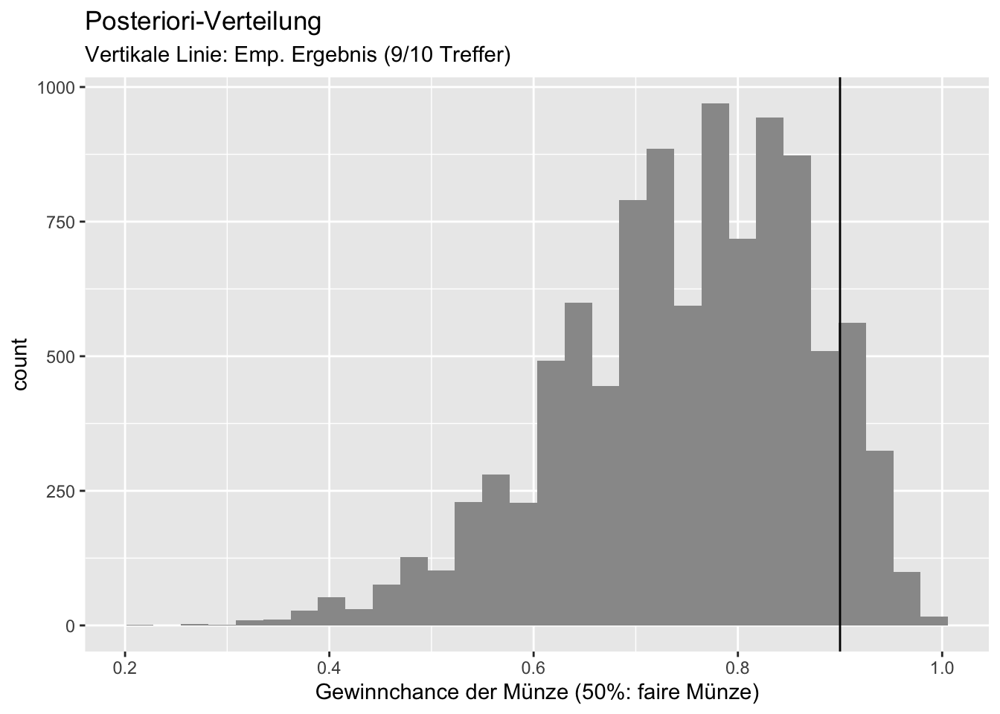
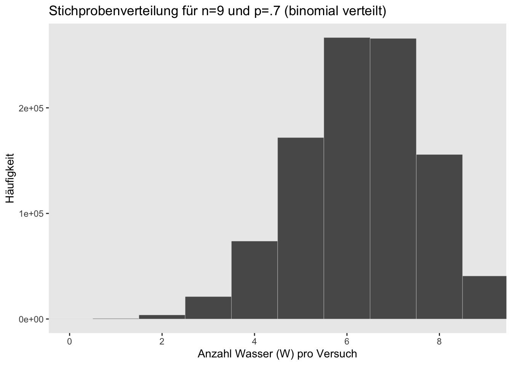
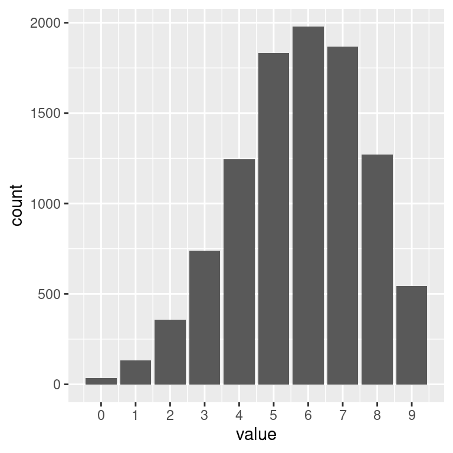
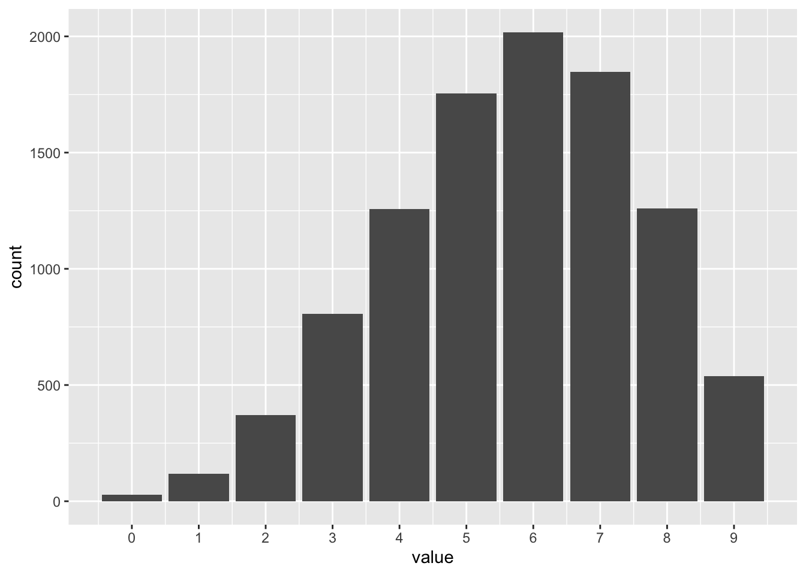

7 Vorhersage-Verteilung

7.1 Der zwielichte Dozent: Stichproben-Vert. vs. Post-Vert.
In einer dunklen Gasse fordert Sie ein Statistik-Dozent zu einem Glücksspiel heraus: Münzwurf; wenn er gewinnt, müssen Sie 10 Euro zahlen. Gewinnen Sie, bekommen Sie 11 Euro. Klingt nach einer guten Partie, nicht war? Natürlich nehmen Sie sofort an.
Sie spielen also Münzwurf; der Dozent setzt auf Zahl. Sie spielen 10 Runden. Leider gewinnt der Dozent 9 von 10 Mal1.
Wütend (und mit leeren Taschen) ziehen Sie von dannen.
Daten: 9 von 10 Treffern beim Münzwurf. Ist die Münze fair?
Code
tibble(
Trefferzahl = rbinom(n = 1e4, size = 10, prob = 1/2)
) %>%
mutate(signifikant = ifelse(Trefferzahl %in% c(9,10), TRUE, FALSE)) %>%
ggplot() +
aes(x = Trefferzahl, fill = signifikant) +
geom_bar() +
scale_x_continuous(breaks = 0:10) +
theme(legend.position = c(0.1, 0.8)) +
geom_vline(xintercept = 9) +
labs(title = "Stichprobenverteilung für p=0.5")Die Stichprobenverteilung zeigt, wie Wahrscheinlich der empirischen Daten \(D\) (z.B. 9 von 10 Treffer) ist gegeben eines Parameterwerts \(p\) (z.B. \(p=0.5\)): \(Pr(D|p)\).

Die Posteriori-Verteilung gibt die Wahrscheinlichkeit jedes Parameterwerts \(p\) wider, gegeben der empirischen Daten \(D\): \(Pr(p|D)\).
Die meisten Forschungsfragen lassen sich mit der Post-Verteilung beantworten, nicht mit der Stichprobenverteilung.
7.2 Mit Stichproben neue Beobachtungen simulieren
7.2.1 Wir simulieren die Wasserzahl bei Globuswürfen
Likelihood (L): Wahrscheinlichkeit für \(w=0,1,2\) bei \(N=2\) und \(p = 0.7\):
Code
L <- dbinom(0:2, size = 2, prob = 0.7)
L
## [1] 0.09 0.42 0.49Wir simulieren \(n=1\) neuen Globusversuch mit \(N=2, p=0.7\) und zählen die (Wasser-)Treffer:
Code
set.seed(42) # Zufallszahlen festlegen
rbinom(n = 1, size = 2, prob = .7) # 0 Treffer (Wasser)
## [1] 0Warum nicht \(n=10\) neue Globusversuche simulieren:
Code
rbinom(n = 10, size = 2, prob = 0.7)
## [1] 0 2 1 1 1 1 2 1 1 2Diese Versuche geben Aufschluss, welche Daten (wie oft Wasser) man bei einem bestimmten Modell, \(p,N\), erwarten kann.
7.2.2 Traue niemals einem Golem (einem Modell)

Quelle: https://imgflip.com/i/5qmhmo
Immer prüfen und wachsam bleiben:
- (Inwieweit) decken sich die simulierten Daten mit den tatsächlichen Beobachtungen?
- Wie realistisch sind die Modellannahmen?
- Kann man das Modell aus verschiedenen Perspektiven prüfen?
7.3 Mit guten Simulationen kommt man den wahren Werten nahe
Warum nicht \(n=10^6\) neue Globusversuche simulieren:
Code
draws <-
tibble(
draws = rbinom(1e6, size = 2, prob = .7))
draws %>%
count(draws) %>%
mutate(proportion =
n / nrow(d))| draws | n | proportion |
|---|---|---|
| 0 | 89770 | 8977.0 |
| 1 | 420629 | 42062.9 |
| 2 | 489601 | 48960.1 |
Diese simulierten Häufigkeiten sind sehr ähnlich zu den theoretisch bestimmten Häufigkeiten mit dbinom: Unser Modell liefert plausible Vorhersagen.
Code
dbinom(0:2, size = 2, prob = .7)
## [1] 0.09 0.42 0.497.4 Stichprobenverteilung
Wir ziehen viele (\(n=10^6\)) Stichproben für den Versuch \(N=9\) Globuswürfe mit \(p=0.7\).
Wie viele Wasser (W) erhalten wir wohl typischerweise?
Code
n_draws <- 1e6
draws <-
tibble(draws = rbinom(n_draws, size = 9, prob = .7))
plot1 <-
draws %>%
ggplot(aes(x = draws)) +
geom_histogram() Code
n_draws <- 1e6
draws <- tibble(draws = rbinom(n_draws,
size = 9,
prob = .7))
# the histogram
draws %>%
ggplot(aes(x = draws)) +
geom_histogram(binwidth = 1, center = 0,
color = "grey92", size = 1/10) +
scale_x_continuous("Anzahl Wasser (W) pro Versuch",
breaks = seq(from = 0, to = 9, by = 2)) +
scale_y_continuous("Häufigkeit",
labels = scales::scientific) +
coord_cartesian(xlim = c(0, 9)) +
theme(panel.grid = element_blank()) +
labs(title = "Stichprobenverteilung für n=9 und p=.7 (binomial verteilt)")
Die Stichprobenverteilung zeigt, welche Stichprobendaten laut unserem Modell (einem bestimmten Parameterwert) zu erwarten sind. Wir können jetzt prüfen, ob die echten Daten zu den Vorhersagen des Modells passen.
7.4.1 Visualisierung der PPV

Quelle: McElreath (2020)
7.5 So viele Verteilungen…
- Die Posteriori-Verteilung gibt Aufschluss zur Häufigkeit (Wahrscheinlichkeit) von Parameterwerten:
- Wie wahrscheinlich ist es, dass “in Wirklichkeit” der Wasseranteil 70% beträgt, also \(\pi=.7\)
- In der Wissenschaft ist man meist an den Parametern interessiert.
- Die PPV gibt Aufschluss zur Häufigkeit von neuen Beobachtungen:
- Welche Beobachtungen (wie viele Wasser/Treffer) sind in Zukunft, bei erneuter Durchführung, zu erwarten.
- Für die Praxis kann das eine interessante Frage sein.
- Der Likelihood gibt Aufschluss, wie gut eine bestimmte Hypothese die Datenlage erklärt.
- Wie gut passt die Hypothese \(\pi=0.7\) auf die Datenlage 6 von 9 Treffern beim Globusversuch?
- Der Likelihood kann aus der Stichprobenverteilung herausgelesen werden.
Code
ppv2_plot <-
d_small %>%
ggplot(aes(x = draws)) +
geom_histogram(binwidth = 1, center = 0,
color = "grey92", linewidth = 1/10) +
scale_x_continuous("Wasser", breaks = seq(from = 0, to = 9, by = 3)) +
scale_y_continuous(NULL, breaks = NULL) +
labs(subtitle = "Stichprobenverteilungen") +
coord_cartesian(xlim = c(0, 9)) +
theme(panel.grid = element_blank()) +
facet_wrap(~ label, ncol = 9) 7.6 PPV berechnen
Für einen bestimmten Parameterwert sind verschiedene Stichprobenwerte möglich. Das Spektrum dieser Möglichkeiten ist in einer Stichprobenverteilung (gegeben eines bestimmten Parameterwerts) dargestellt.
Code
ppv <-
rbinom(1e4,
size = 9,
prob = samples$p_grid) %>%
as_tibble()
ppv_plot2 <-
ppv %>%
ggplot() +
aes(x = value) +
geom_bar() +
scale_x_continuous(
breaks = 0:9)Code
ppv_plot2
- Die PPV unseres Modells zeigt uns, dass wir in künftigen Versuchen zumeist 6 Treffer zu erwarten haben.
- Aber ein relativer breiter Bereich an Treffern ist ebenfalls gut laut unserer PPV erwartbar.
7.7 Vorhersagen sind schwierig
… gerade wenn sie die Zukunft betreffen, so ein Sprichtwort.
Das zeigt uns die PPV: Der PPV unseres Modells gelingt es zwar, der theoretisch wahrscheinlichste Parameterwert ist auch der häufigste in unseren Stichproben, aber die Vorhersagen haben eine große Streuung, birgt also hohe Ungewissheit.
Die PPV zeigt also, welche Beobachtungen laut unserem Modell künftig zu erwarten sind.

Würde man die Vorhersagen nur anhand eines bestimmten Parameterwertes (z.B \(p=0.6\)) vornehmen, hätten die Vorhersagen zu wenig Streuung, würden also die Ungewissheit nicht ausreichend abbilden (Übergewissheit, Overconfidence).
7.8 Zwei Arten von Ungewissheit in Vorhersagen von Modellen
Ungewissheit innerhalb des Modells: Auch wenn der (oder die) Modellparameter eines Modells mit Sicherheit bekannt sind, so bleibt Unsicherheit, welche Beobachtung eintreten wird: Auch wenn man sicher weiß, dass \(p=1/4\) Murmeln blau sind, so kann man nicht sicher sagen, welche Farbe die nächste Murmel haben wird (Ausnahme: \(p=1\) oder \(p=0\)).
Ungewissheit in den Modellparametern: Wir sind uns nicht sicher, welchen Wert \(p\) (bzw. die Modellparameter) haben. Diese Unsicherheit ist in der Post-Verteilung dargestellt.
Um zu realistischen Vorhersagen zu kommen, möchte man beide Arten von Ungewissheit berücksichtigen: Das macht die Posteriori-Prädiktiv-Verteilung (PPV).
Die PPV zeigt, welche Daten das Modell vorhersagt (prädiktiv) und mit welcher Häufigkeit, basierend auf der Post-Verteilung.
7.9 Vergleich der Verteilungen

- Links - Posterior-Verteilung: Wahrscheinlichkeiten der Parameterwerte
- Mitte - Stichprobenverteilung: Wahrscheinlichkeiten der Beobachtungen gegeben eines bestimmten Parameterwertes
- Rechts - Posterior-Prädiktiv-Verteilung: Wahrscheinlichkeiten der Beobachtungen unter Berücksichtigung der Unsicherheit der Posteriori-Verteilung
was er mit lautem Gelächter quittiert↩︎